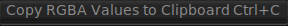

The Pixel Menu

The Pixel Menu allows copying the RGBA pixel values of the pixel under the cursor (where the top left of the menu normally appears) to the clipboard. You can then paste the values in some other application or window.